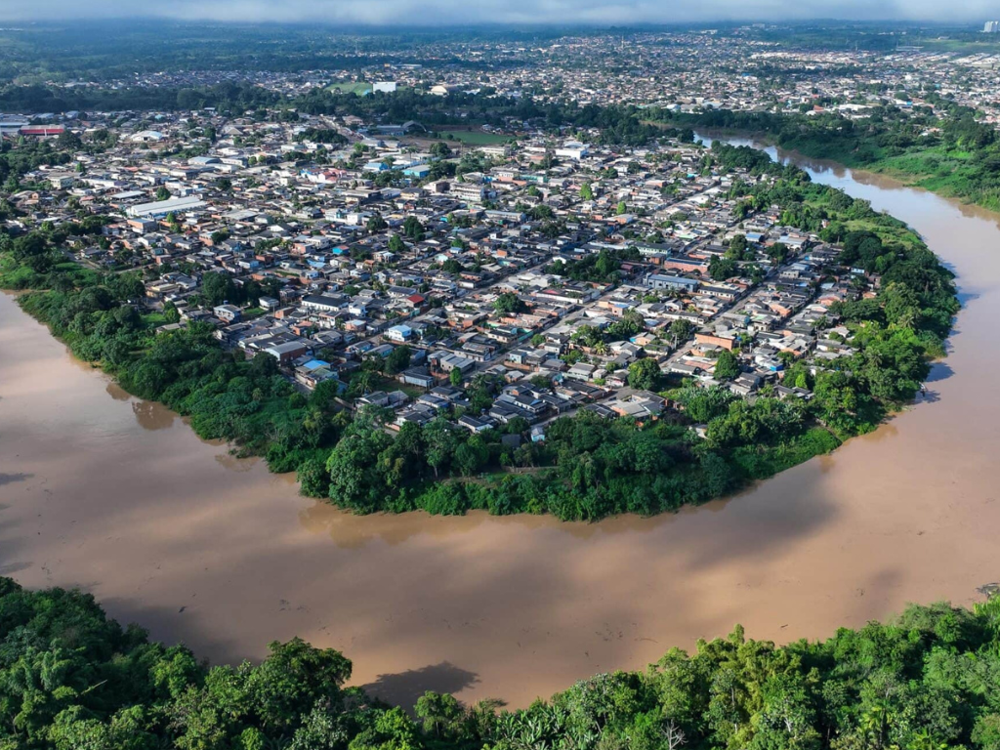

Acre é um estado no noroeste do Brasil, na Floresta Amazónica. É conhecido pela quantidade de árvores-da-borracha e castanhas-do-brasil. Na fronteira peruana, a oeste, o Parque Nacional da Serra do Divisor possui montanhas elevadas e várias quedas de água, além de diversas espécies animais, como tatus-gigantes, tapires e aves raras. A sudeste, encontra-se Rio Branco, a capital do estado, nas margens do rio Acre.

Voltar